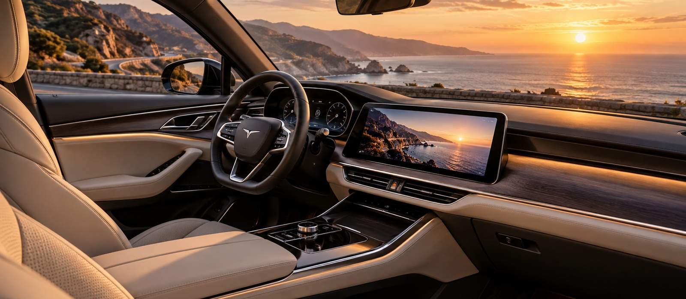
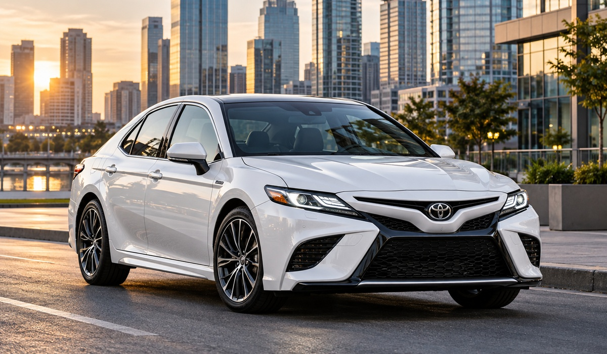
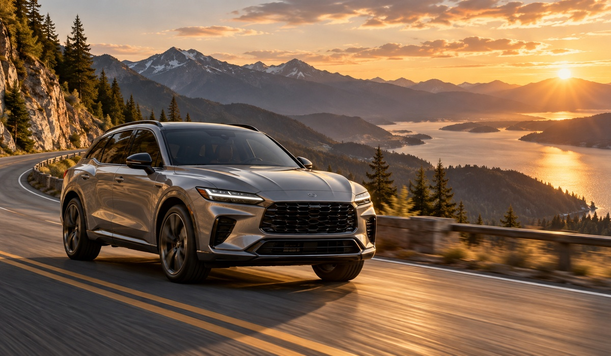
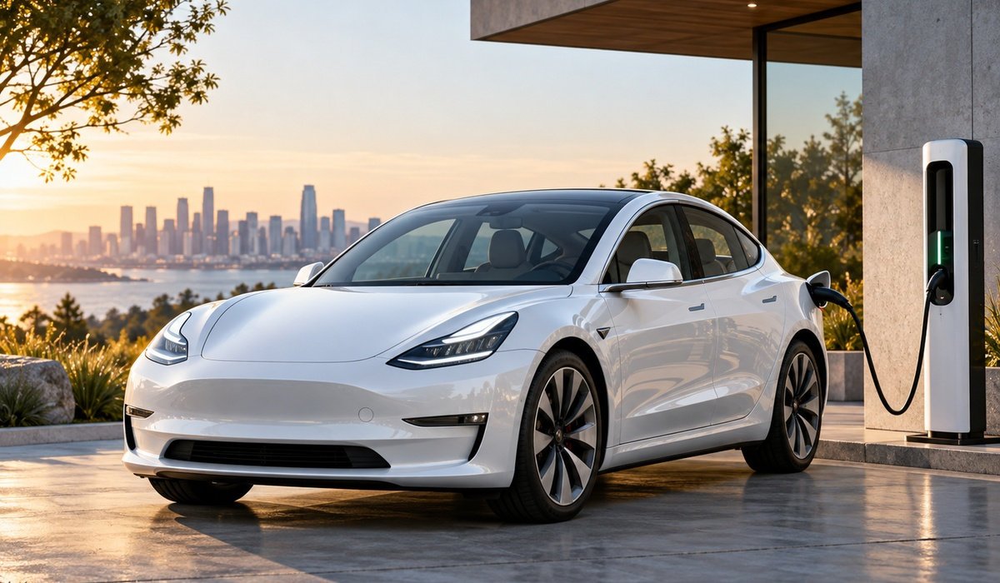

BỘ SƯU TẬP VELORA AUTO
Khám phá 15 mẫu xe theo phong cách sử dụng, loại năng lượng và trải nghiệm lái.

5 nhóm xe
 City & SedanNova City 2026, Velora S 2026 |  SUV & CrossoverTerra X5 2026, Horizon Family 2026, Atlas Adventure 2026 |  Electric & HybridSolis Hybrid 2026, Eon E1 2026, Eon X 2026, Voltis R 2026, Lumen EV 2026 |  Sport & PerformanceOrion Sport 2026, Blaze GT 2026, Titan R 2026 |  Track & RacingApex Track 2026, Zenith EV GT 2026 |
Chọn nhanh theo nhu cầu
| Nhu cầu | Gợi ý nhóm xe | Mẫu tham khảo |
|---|---|---|
| Di chuyển đô thị | City & Sedan | Nova City / Velora S |
| Gia đình & hành trình dài | SUV & Crossover | Horizon Family / Atlas Adventure |
| Quan tâm điện hóa | Electric & Hybrid | Eon X / Voltis R / Lumen EV |
| Hiệu suất cao | Sport & Performance | Blaze GT / Titan R |
| Phong cách đường đua | Track & Racing | Apex Track / Zenith EV GT |